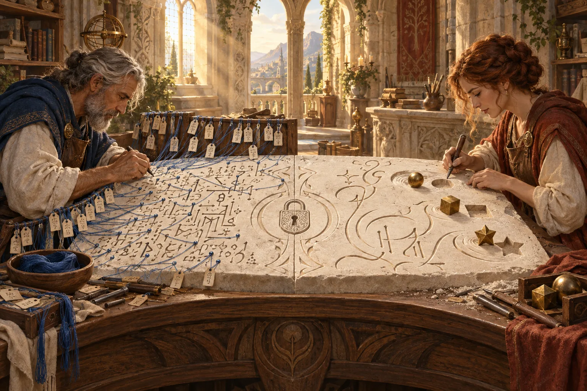
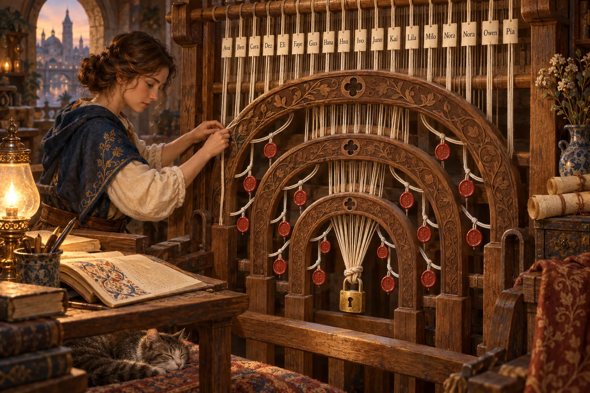
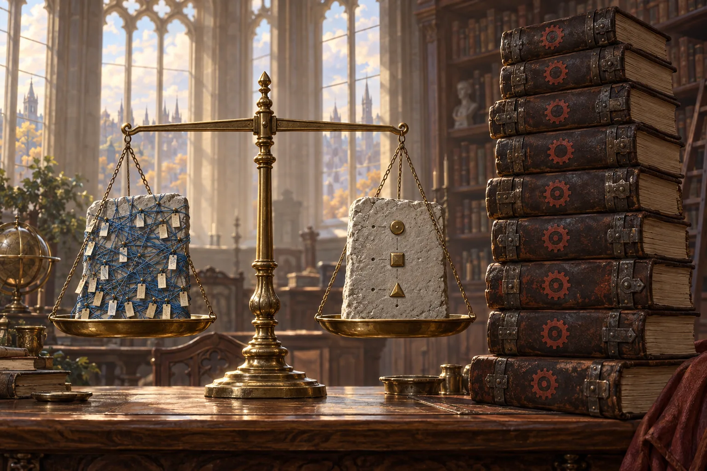

Implementations in Ethos: Two Designs

The ask
I don't know if it would satisfy me but if you think you can figure out how we would extend the syntax of ethos to do the functions and support it and make the syntax perfect and super minimal (so that there's no repetition, nothing out of place, and no noise), it's all just pure description of a program, as compact as it can be, basically, and not in word size. We don't shorten words. The compactness is in the very low noise amount.
-- psyche, STT, 2026-09-25, to e51411 (flows/e51411/vision/ethos.md, last entry, as committed in b8db92ad2).
You can put a sub-agent and make a presentation or ask Fable and then present both in the book.
-- psyche, 2026-09-25, to e51411, as relayed verbatim in the main flow's brief.
noteflows/e51411/vision/ethos.md is absent from the working tree; commit 0436fb21d deleted it. The first quote is its last committed text. The second sentence is in no committed version.
Two designs answer it, written the same day without sight of each other: Fable's (38de5b) and Opus's (a subflow of e51411). Both say how a kind's capabilities get their bodies, written in Ethos itself.
tested the report says it was run. untested designed or written, not run. No winner is named here.

Every value has a name
Core idea. An association that carries bodies is an implementation: Store.[ Lockable.{ … } ], one body per capability, in the kind's order. No free functions. Bodies use Ethos's own shape (a name, a dot, what it stands for) and five rules:
- Binding.
name.expression. A lowercase head is a binding; the same rule names a body's or a closure's parameter. - Construction. The datom of the value:
Lock.{ … },Err.DuplicateName.held. - Call.
receiver.capability.[ arguments ]. - Match. A bracket after an enum value. One arm per variant; a missing arm is refused.
- Sequence.
[ steps ]; the last step is the yield.
No keywords, operators, field names or type annotations in bodies. Intrinsics (equals, find, push …) are kinds declared in a protos library. The manifest is a datom of a Manifest type.
Read lock: find a held lock of the same name; if Some, refuse DuplicateName. If None, find one whose paths overlap; if Some, refuse PathOverlap. If None: build the Lock, increment the id, push, yield Ok.lock.
Library
[ protos:[ Equatable Searchable Growable Countable ] ] ; imports: kinds the intrinsics bear
[ LockId.Integer LockName.String LockPath.String FlowId.String Reason.String
LockRequest.{ LockName FlowId Vector<LockPath> Reason }
Lock.{ LockId LockName FlowId Vector<LockPath> Reason }
LockRejection.[ DuplicateName.Lock PathOverlap.{ Lock LockRequest } ]
ReleaseRejection.[ UnknownLock.LockId ]
Store.{ LockId Vector<Lock> } ] ; next id, held locks
[ Lockable.[ lock!{ [ LockRequest ] [ Result<Lock LockRejection> ] }
release!{ [ LockId ] [ Result<Lock ReleaseRejection> ] }
observe.[ Vector<Lock> ] ]
Overlapping.[ overlaps.{ [ Vector<LockPath> ] [ Boolean ] } ] ]
[ Lock.[ Overlapping.{
overlaps.[ lock_path_vector
self.lock_path_vector.any.[ mine lock_path_vector.any.[ theirs mine.prefix_of.[ theirs ].or.[ theirs.prefix_of.[ mine ] ] ] ] ] } ]
Store.[ Lockable.{
lock.[ request
self.lock_vector.find.[ held held.lock_name.equals.[ request.lock_name ] ]
.[ Some.held.Err.DuplicateName.held
None.self.lock_vector.find.[ held held.overlaps.[ request.lock_path_vector ] ]
.[ Some.held.Err.PathOverlap.{ held request }
None.[ lock.Lock.{ self.lock_id request.lock_name request.flow_id request.lock_path_vector request.reason }
self.lock_id.increment.[]
self.lock_vector.push.[ lock ]
Ok.lock ] ] ] ]
release.[ lock_id
self.lock_vector.remove.[ held held.lock_id.equals.[ lock_id ] ]
.[ Some.lock.Ok.lock
None.Err.UnknownLock.lock_id ] ]
observe.self.lock_vector.clone.[] } ] ]impl Overlapping for Lock {
fn overlaps(&self, lock_path_vector: std::vec::Vec<LockPath>) -> bool {
self.lock_path_vector.iter().any(|mine|
lock_path_vector.iter().any(|theirs| mine.prefix_of(theirs) || theirs.prefix_of(mine)))
}
}
impl Lockable for Store {
fn lock(&mut self, request: LockRequest) -> std::result::Result<Lock, LockRejection> {
match self.lock_vector.iter().find(|held| held.lock_name == request.lock_name) {
Some(held) => Err(LockRejection::DuplicateName(held.clone())),
None => match self.lock_vector.iter().find(|held| held.overlaps(request.lock_path_vector.clone())) {
Some(held) => Err(LockRejection::PathOverlap(PathOverlap_Data { lock: held.clone(), lock_request: request })),
None => {
let lock = Lock { lock_id: self.lock_id, lock_name: request.lock_name, flow_id: request.flow_id,
lock_path_vector: request.lock_path_vector, reason: request.reason };
self.lock_id += 1;
self.lock_vector.push(lock.clone());
Ok(lock)
}
},
}
}
fn release(&mut self, lock_id: LockId) -> std::result::Result<Lock, ReleaseRejection> {
match self.lock_vector.iter().position(|held| held.lock_id == lock_id).map(|i| self.lock_vector.remove(i)) {
Some(lock) => Ok(lock),
None => Err(ReleaseRejection::UnknownLock(lock_id)),
}
}
fn observe(&self) -> std::vec::Vec<Lock> { self.lock_vector.clone() }
}Every value is named by its type
Core idea. No new glyph, no keyword, one structure: Type.[ Kind.{ Body… } ]. A body is a datom of the yield type with holes. Variable names are gone: a value is named by its type, as a field is. A lowercase head is a capability call; a capitalized head is a variant or a value, as the expected type decides. Four rules:
- Scope (anuvṛtti). Self, inputs, each step's result, loop elements and arm payloads are in scope, each named by type, with a struct's fields carried. Direct beats carried, nearer beats farther; a tie is refused.
- Fill. Unwritten positions fill from scope, one unique value each:
Lockedalone meansLocked.Lock. - Exit. A step yielding
Err.Eleaves at once when the yield can carry E: Rust's?without the glyph. - Effect. Only a
!capability changes Self, by aSelf.{ … }step that builds a new Self; the runtime persists it.
The manifest is a fourth root, Manifest, the only place a version is written.
testedThe protos reader accepts the whole example; ethos-zero 10.0.0 refuses it at the first body, Conceptual.{ [ 3 0 1 0 ] Expected.Reference }. measured44 lines, 509 tokens, against 226 lines, 1681 tokens of Rust: 3.3× smaller, glyph share unchanged at about 60%. untestedThe scope, fill and exit rules: no resolver exists.
Read lock: normalize the request; admit it against each held Lock (the first refusal exits); build a Lock from scope; rebuild Self with it appended, sorted, id incremented; answer Locked.
Library
[ signal_orchestrate:[ LockId LockPath LockPaths LockRequest Lock LockOverlap
LockRejection ReleaseRejection Query Response
ObserveSelection Observation ]
nexus:Answering ]
[ Locks.Vector<Lock>
Ledger.{ Locks LockId } ] ; the held locks, and the next LockId
[ Normalizable.[ normalize.[ Result<Self LockRejection> ] ]
Nestable.[ nest.{ [ LockPath ] [ Boolean ] }
contain.{ [ LockPath ] [ Boolean ] }
meet.{ [ LockPaths ] [ Boolean ] } ]
Admitting.[ admit.{ [ Lock ] [ Result<Lock LockRejection> ] } ]
Lockable.[ lock!{ [ LockRequest ] [ Response ] }
release!{ [ LockId ] [ Response ] }
observe.{ [ ObserveSelection ] [ Observation ] } ] ]
[ LockPath.[ Normalizable.{ [ require.{ begin.{ Self / } RelativePath }
drop.{ split.{ Self / } include.{ [ «» «.» ] String } }
require.{ not.include.{ Vector<String> «..» } ParentComponent }
Ok.concatenate.[ / join.{ Vector<String> / } ] ] }
Nestable.{ [ either.[ contain.{ Self LockPath } contain.{ LockPath Self } ] ]
[ either.[ equal.{ Self / } equal.{ Self LockPath } begin.{ LockPath concatenate.[ Self / ] } ] ]
[ any.{ LockPaths nest.{ Self LockPath } } ] } ]
LockRequest.[ Normalizable.{ [ require.{ not.empty EmptyPaths }
each.{ LockPaths normalize.LockPath }
repeat
[ Some.Err.RepeatedPath
None.Ok.Self.{ LockName FlowId Vector<LockPath> LockReason } ] ] }
Admitting.{ [ require.{ not.equal.{ Self.LockName Lock.LockName } DuplicateName }
find.{ Self.LockPaths meet.{ LockPath Lock.LockPaths } }
[ Some.Err.PathOverlap None.Ok ] ] } ]
Ledger.[ Lockable.{ [ normalize
each.{ Locks admit }
Lock
Self.{ sort.{ append [ LockName LockId ] } increment.Self.LockId }
Locked ]
[ find.{ Locks equal.{ LockId Lock.LockId } }
Self.{ drop.{ Locks equal.{ LockId Lock.LockId } } Self.LockId }
Option<Lock>.[ Some.Released None.ReleaseRejected.UnknownLockId ] ]
[ Locks ] }
Answering.{ [ Query Response Observation ]
[]
{ [ Self.{ [] 1 } ]
[ Query.[ Lock.lock Release.release Observe.Observed.observe ] ]
[ observe.{ Self Locks } ] } } ] ]impl Locks for OrchestrateStore {
fn lock(&mut self, request: LockRequest) -> Result<OrdinaryResponse, StoreError> {
let request = NormalizedLockRequest::from_request(request)?;
for holder in self.current_locks()? {
if request.duplicates_name_of(&holder) {
return Ok(OrdinaryResponse::LockRejected(LockRejection::DuplicateName(holder)));
}
if let Some(path) = request.overlapping_path_of(&holder) {
return Ok(OrdinaryResponse::LockRejected(LockRejection::PathOverlap(
LockOverlap { lock_path: path, lock: holder })));
}
}
// … allocator read with invariant check, checked_add, into_lock, atomic sema commit: 11 more lines
Ok(OrdinaryResponse::Locked(lock))
}
}Opus's grammar, in full
Association := Type.[ (Kind | Implementation)… ] ; a bare Kind stays today's compile-time assertion
Implementation := Kind.{ Body… } ; simple kind: one body per capability, in the kind's order
| Kind.{ [ Type… ] [ Constant… ] { Body… } } ; complex kind: associated types, constants, bodies
Body := [ Step… ] ; each step's value is bound under its type; the last step is the yield
Step := Expression | Self.{ Expression… } ; the second form rebinds Self, and is allowed only under a `!` capability
Expression := Name(.Name)* ; a value in scope, then projections by field type: Lock.LockName
| capability[.Arguments] ; a call: the receiver alone, or { receiver input… }
| Variant[.Expression] ; a construction; an omitted payload is filled
| Type.{ … } | { … } | [ … ] | bare | «…» ; datom literals, read by position as datom is
| [Name.][ Arm… ] ; a match on Name, or, with no head, on the previous step
Arm := Variant.Expression | Expression ; the payload is bound by its type; a last unheaded arm is the general rule
Side by side, and where they agree
receiver.capability.[ args ]; refusals nest as match arms.request, held, lock).request.lock_name, held). Not counted.?-shaped rule deferred.increment, push); the generator picks move, clone or borrow.Self.{ … } rebuilds Self, only under !; all else is pure.Manifest type.Manifest, with a product.Where they agree.
- No new glyph and no keyword: bodies are datom shapes, and position says what a bracket means.
- An implementation lives in the association section,
Type.[ Kind.{ … } ], bodies in the kind's order, capability names not repeated. - A construction is the datom literal of the value.
- Case carries meaning. They differ on what lowercase means: a binding for Fable, a capability for Opus.
- Intrinsics are a library of kinds still to be designed, and naming is won or lost there.
- The version lives only in a manifest that is itself datom.
- Reading needs the types in view.
- Worth doing now only in a bounded form, after the audit fixes. Orchestrate's locks are the first test; I/O stays in Rust or the runtime.
What you rule on
Each is a fork between the two designs, or a question both leave open. your ruling
- 1
- 2
- 3
- 4
- 5
- 6
- 7
- 8